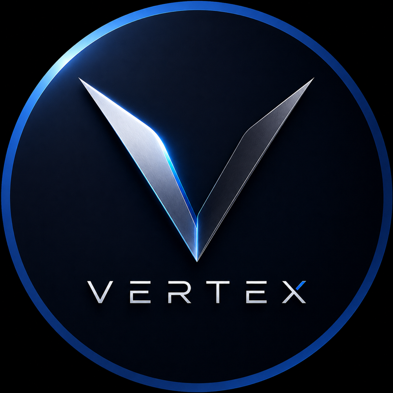

Agentes de IA
Agentes que atendem, vendem, cobram e operam — integrados ao seu ERP, CRM e WhatsApp. Não é chatbot: é força de trabalho digital com critério.
Boutique de engenharia & IA
Agentes de IA, automações e sistemas sob medida para negócios que não podem errar — do conceito ao deploy.

Agentes que atendem, vendem, cobram e operam — integrados ao seu ERP, CRM e WhatsApp. Não é chatbot: é força de trabalho digital com critério.
Processos críticos rodando sozinhos, com auditoria e fallback. O que sua equipe faz em horas passa a acontecer em segundos.
SaaS, portais e plataformas construídos do zero para o seu modelo de negócio — arquitetura própria, sem template, sem atalho.
Poucos projetos por vez.
Nenhum atalho.
Entendemos a operação antes de escrever qualquer linha. O problema certo vale mais que a solução rápida.
Desenho do sistema, das integrações e dos riscos — aprovado com você antes do build.
Entregas semanais, funcionando em produção desde cedo. Você acompanha o progresso, não promessas.
Handoff completo, documentação e monitoramento. O sistema é seu — de verdade.